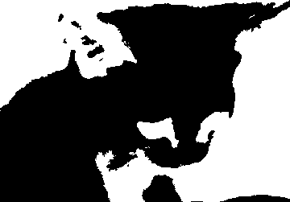

Es un proyecto artistico, enfocado a la musica (principalmente). Creado en Victoria de Durango, Dgo(MX) aproximadamente en Diciembre del 2025.
Es un caso de intertextualidad en el que se reescribe el titulo de "25 Cats Name Sam and One Blue Pussy" de Andy Warhol, resultando entonces en "17 Gatos Llamados Genesis y una Gata Blanca Llamada Arami" (Arami por ser autor(a) de la obra). Por cuestiones practicas se redujo a "17 Gatos Llamados Genesis" sin embargo se sigue dando credito a Arami en ocasiones.
Esto deberia intuirse por la pregunta anterior. Es un proyecto solista formado unicamente por una gata blanca llamada Arami.
No, no le conoces. Se opta por usar la identidad de Arami como la personificacion de la identidad anonima de quien crea esta obra.
Si existe, existe como un alias para encubrir la identidad del autor(a). Arami es alguien real cuyo nombre real no es Arami.
Talves si
La mejor forma es mediante @17gatosllamadosgenesis en instagram.
